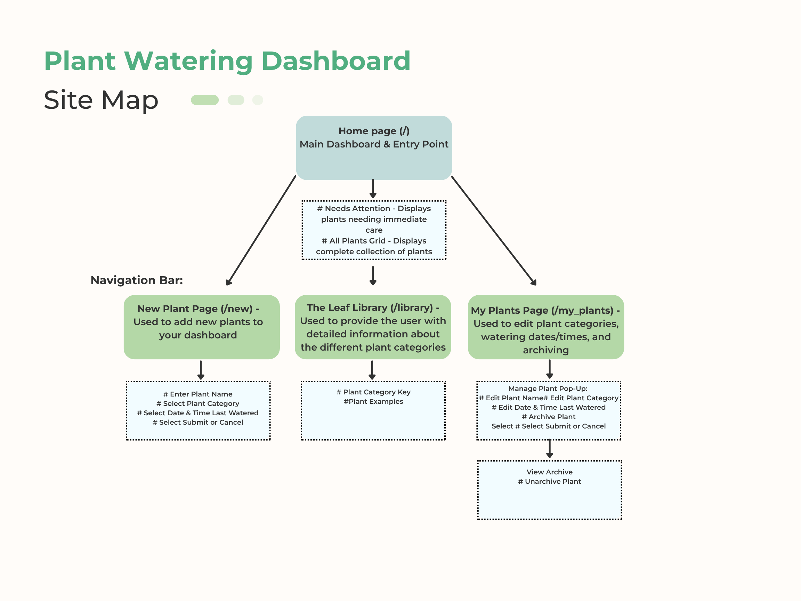

Glass Botanist
Keep your greens glowing.
The Glass Botanist is a centralized plant-care dashboard that tracks individual watering schedules based on specific plant categories to ensure optimal health. The app uses a visual health-status system to alert you which plants need attention, helping you keep through timely reminders.

Challenge
Many plant owners only recognize the need for care after their plants exhibit clear signs of distress. Seasonal changes can affect plant health, including changes in temperature, sunlight levels, and humidity. Further compounding this issue is that the needs of one plant can vary significantly from the needs of another.
To address this, my goal became simplifying the cognitive burden of plant care by transforming the mundane chore of watering plants into an intuitive process that uses visual cues to encourage consistent routines.
Process
Establishing the web application structure & basic elements
As a Memphis native and avid gardener of perennials, I am all too familiar with the unpleasant surprise of finding my thirsty hydrangeas wilting during the unforgiving summer months. I could easily empathize with this specific challenge, as I have personally spent many afternoons outside watering my plants after they have already started to protest, combating the humidity, swarming mosquitoes, and a leaking water hose that tends to spray everywhere.
However, because this was a two-week project, I decided to narrow my focus. I chose to focus on the habit of providing consistent care rather than the actual science behind plant care.
I began by establishing a site map comprised of four main pages: home (/), new (/new), my plants (/my_plants), and the leaf library (/library). I used Vibe coding to build out these sections.
Figure 1. Application site map

Next, I created relevant subsections that define the functions of each page. I mapped various user flows, including the quick watering function on the home page (/) and the ability to edit and archive existing plants within their collection.
Swipe or drag to browse
Figure 2. Key user flows
Additionally, an attempt at narrowing my scope, I decided that the Leaf Library would be a way for the user to designate their plant into one of four categories:
- Desert dweller – low maintenance, prefers dry conditions; watering is needed every 14 – 17 days
- Standard houseplant – requires a consistent amount of moderate moisture; watering is needed every 7 days
- Thirsty tropical – prefers humid environments and damp soil; watering is needed every 3–5 days
- Hydration heavy – the soil should never be dry; water every 1–2 days
Additionally, I decided to integrate a getPlantHealthStatus function that determines the plant's facial expression, setting the criteria as follows:
- Happy – if the plant is within its recommended watering window
- Neutral – if the plant is at the end of its watering window
- Distressed – if the plant has exceeded its watering window
Visual style development
Initially, I decided to use an earth-tone color scheme for all app pages (i.e., sage green, terracotta, warm browns, and creams). Unfortunately, I was unable to include the reactive faces based on plant health status to render correctly. The app could only show neutral and sad faces, so I left the feature out because it wasn't part of my initial MVP.
Figure 3. Initial launch home screen

However, I was able to continue iterating later, refining my design and troubleshooting the getPlantHealthStatus function. I created a reusable skill, /inspire-design-system, to generate a Design.md folder. I reviewed various web applications on Dribbble and Landbook, and ultimately prompted Cursor to use the following site, https://hellopebl.com/?ref=land-book.com, as design inspiration. The following test file was generated.
Swipe or drag to browse
Figure 4. Design system test pages
I applied the new color palette and manually modified the plant icons because the new design clashed with the initial earth-tone color scheme. Please see the various iterations below.
Swipe or drag to browse
Figure 5. Plant icon iterations
I was also able to restore the happy, neutral, and distressed faces to the pots at this time, ultimately discovering that the sad and happy mouths were too similar (Q28 24 vs Q28 25). Updating the PLANT_POT_EXPRESSIONS to happy (Q28 25) and sad (Q28 19) resolved the issue at last. Furthermore, I used Awaad to find a website with a liquid glass effect. I decided to apply this to my plant card containers.
AI assisted development
I used Cursor to generate a my /inspire-design-system skill and DESIGN.md file. I also built the entire application by outlining the site map and key user flows, as well as troubleshooting the reactive expressions, and various designs.
Solution
How might we help new plant owners create consistent care habits by integrating gamified feedback?
Figure 6. Key screens across the app

My app bridges the gap through a two-part solution:
- Educational clarity — The app categorizes plants into four distinct watering tiers (Desert Dweller, Standard Houseplant, Thirsty Tropical, and Hydration Heavy), which helps remove the guesswork from care schedules.
- Gamification — The app provides immediate, relatable emotional feedback through dynamic facial expressions (happy/neutral/distressed) to help users engage in an intuitive, interactive experience that promotes long-term plant care.
Figure 7. Finished app on iPad and iPhone

Deployment
The Glass Botanist translates the anxiety of plant care into a low-friction, intuitive interface. Dynamic status modeling replaces reactive guesswork, allowing the user to interpret plant maintenance using clear, glanceable health indicators.
The live, responsive application prioritizes proactive habit formation, allowing new plant owners to manage care schedules, monitor moisture levels, and maintain overall plant health with minimal cognitive load.
Reflection
My work on the Glass Botanist highlights the transition from creating purely functional tools to designing for human behavior. I discovered that the most effective interfaces not only solve problems but also lessen the cognitive load of everyday life. This is achieved through state-driven design that adapts to the user's reality in real time.